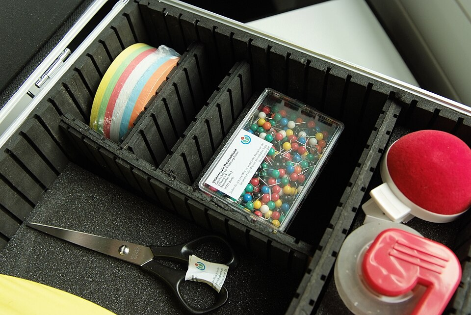

Módulo 13 — Proyectos Integradores
Tres proyectos con dificultad creciente que combinan todo lo aprendido.
Proyecto 1 — Gestor de Tareas (CLI)

Objetivo: app de línea de comandos que permite agregar, listar, completar y borrar tareas. Persiste en JSON.
Requisitos
- Comandos:
add,list,done,rm,clear - Cada tarea: id, descripción, estado, timestamp creado
- Argumentos parseados con
argparse - Persistencia en
~/.tareas.json - Manejo de errores (archivo corrupto, id inexistente)
Estructura sugerida
gestor_tareas/
├── pyproject.toml
├── src/
│ └── gestor_tareas/
│ ├── __init__.py
│ ├── __main__.py # entry point
│ ├── modelos.py # @dataclass Tarea
│ ├── almacenamiento.py # leer/escribir JSON
│ └── cli.py # argparse + comandos
└── tests/
└── test_almacenamiento.pyConceptos aplicados
- Módulo 03 (estructuras de datos): lista de tareas
- Módulo 06 (POO):
@dataclass - Módulo 07 (errores): excepciones custom
- Módulo 08 (I/O): JSON, pathlib
- Módulo 09 (paquetes): estructura modular
- Módulo 12 (stdlib): argparse, datetime
Ver ejemplos/proyecto_tareas.py por una implementación de referencia.
Proyecto 2 — Web Scraper Async
Objetivo: bajar el HTML de una lista de URLs en paralelo, extraer títulos, y guardar resultado en CSV.
Requisitos
- Lectura de URLs desde archivo (uno por línea)
- Descarga concurrente con
asyncio+aiohttp - Parser HTML simple con regex (o
beautifulsoup4si querés) - Output CSV con: url, título, status, tiempo
- Logging de errores de conexión
- Timeout configurable
Conceptos aplicados
- Módulo 11 (concurrencia): asyncio
- Módulo 08 (I/O): CSV
- Módulo 12 (stdlib): re, logging, argparse
- Módulo 07 (errores): manejo robusto de fallos de red
Pseudocódigo
async def scrape(session, url):
async with session.get(url, timeout=10) as r:
html = await r.text()
title = extract_title(html)
return {"url": url, "title": title, "status": r.status}
async def main(urls):
async with aiohttp.ClientSession() as session:
return await asyncio.gather(*(scrape(session, u) for u in urls), return_exceptions=True)Proyecto 3 — API REST con FastAPI
Objetivo: API CRUD para gestionar productos con persistencia en SQLite.
Requisitos
- Endpoints:
GET /productosGET /productos/{id}POST /productosPUT /productos/{id}DELETE /productos/{id}
- Validación con Pydantic
- DB SQLite con
sqlite3o SQLAlchemy - Tests con
pytest+httpx - Documentación automática (FastAPI genera OpenAPI)
Setup
python -m venv .venv
source .venv/bin/activate # Linux/Mac
# .venv\Scripts\activate # Windows
pip install fastapi uvicorn pydantic
uvicorn main:app --reloadEstructura
from fastapi import FastAPI, HTTPException
from pydantic import BaseModel
app = FastAPI()
class ProductoIn(BaseModel):
nombre: str
precio: float
stock: int = 0
class Producto(ProductoIn):
id: int
productos: dict[int, Producto] = {}
@app.get("/productos", response_model=list[Producto])
def listar():
return list(productos.values())
@app.post("/productos", response_model=Producto, status_code=201)
def crear(p: ProductoIn):
nuevo_id = max(productos.keys(), default=0) + 1
producto = Producto(id=nuevo_id, **p.model_dump())
productos[nuevo_id] = producto
return producto
@app.get("/productos/{id}", response_model=Producto)
def obtener(id: int):
if id not in productos:
raise HTTPException(404, "No existe")
return productos[id]Documentación automática en http://localhost:8000/docs.
Conceptos aplicados
Todo el curso.
Próximos pasos
Después de completar estos proyectos, áreas naturales de profundización:
| Tema | Bibliotecas clave |
|---|---|
| Data science | pandas, numpy, matplotlib |
| Machine learning | scikit-learn, PyTorch, TensorFlow |
| Web frameworks | Django, Flask, FastAPI |
| Automation/scraping | Selenium, Playwright, Scrapy |
| GUI | Tkinter, PyQt, Kivy |
| DevOps | Click, Rich, Typer |
| Testing | pytest, hypothesis, mypy |
| Performance | Cython, Numba, profiling tools |
Recursos recomendados
- Libro: Fluent Python — Luciano Ramalho
- Libro: Effective Python — Brett Slatkin
- Web: Real Python
- Web: Python Docs
- Práctica: Exercism, LeetCode, Advent of Code
🎓 Fin del curso
Si llegaste hasta acá: felicitaciones. Acabás de cubrir Python de cero hasta proyectos reales.
El siguiente paso es practicar: elegí UNO de los 3 proyectos y construilo de cero, sin copiar. Cuando termines, hacé otro. Ahí es donde el conocimiento se convierte en habilidad.